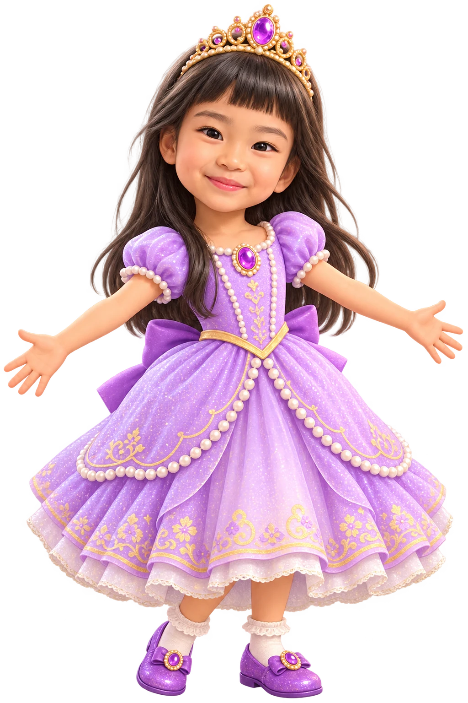

⭐ 0 / 4
💇 HAIR
Choose the ponytail!
ポニーテールは どれ？
💇
👑
👗
👠
Can you say
PONYTAIL
✨ YOU LOOK BEAUTIFUL! ✨
Great job! 🎉
Choose a game • Play!

Where is the elephant?
ぞうさんはどこ？
Can you say
ELEPHANT
きいているよ…
スコア: 0 / 0
Where are her eyes?
めは どこ？
💇 HAIR
Choose the ponytail!
ポニーテールは どれ？
Can you say
PONYTAIL
✨ YOU LOOK BEAUTIFUL! ✨
Great job! 🎉
✨ MAGIC ARROWS